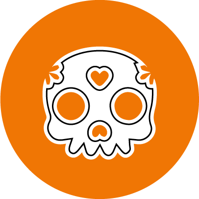

I El alma er der ingen vinterdepression - det handler om mad, farver, lys og lykke. En stor lykkelig familie, hvor alle er velkomne takket være stemningen, et sted hvor alle er altid velkommen. Jakobs passion for mad begyndte, da han kun var 12 år gammel og arbejdede i en mexicansk grill. Siden da har han rejst verden og arbejdet i flere restauranter. På et tidspunkt arbejdede han i en restaurant i californien, og det hele mexicanske personale lavede tacos til ham til frokost - i dette øjeblik opstod kærligheden for tacos. Han stoppede sit arbejde og rejste gennem Nord- og Sydamerika for at opleve og smage på alle mulige mexicanske retter. Han tilbød selv at arbejde gratis i restauranter, så han kunne lære alt der var at vide om det latinamerikanske køkken.
Den majs, vi bruger til at lave vores tacos, er GMO fri, kommer fra Norditalien og gør uslåelige taco skaller. Vi knæler også vores egen flaky quesadilla og den bløde og sprøde cubanske sandwich med Pindos hvedemel. Alt vores kød er marineret og kogt lavt og langsomt, indtil den ønskede smag og ømhed opnås. Nogle af de grøntsager og korn, vi bruger, er økologiske, og andre er fri for kemikalier. Vi tilbyder også vegetariske og veganske muligheder.
Taqueria har lagt stor vægt på at bruge autentiske ingredienser af høj kvalitet for at servere mad, der er så tæt som det kommer til de originale smag af det latinamerikanske køkken. Vi tilbereder også maden mange gange om dagen, så du forkæler det altid frisk.
Udtrykket “sukker skelet” kommer faktisk fra de dødes dags festiviteter og er måske det mest globalt symbolske symbol på både festlighederne og Mexico generelt. Sugar skulls er enten købt eller lavet af familier til at tilføje til deres alter, og navnet på afdøde er ofte skrevet i isning på panden. Udover de traditionelle sukkerversioner kan du også få chokolade og kiks ‘sugar skulls’ i denne periode.
En anden almindelig tradition i den Døde Dages periode er indtagelsen af den såkaldte pan de muerto. Heldigvis er dette ikke brød lavet af døde mennesker, uanset hvad navnet kan få dig til at tænke. Det er faktisk let orange-flavored sødt brød, som har ‘bonelike’ dekorationer på toppen af det og en sund belægning af sukker.